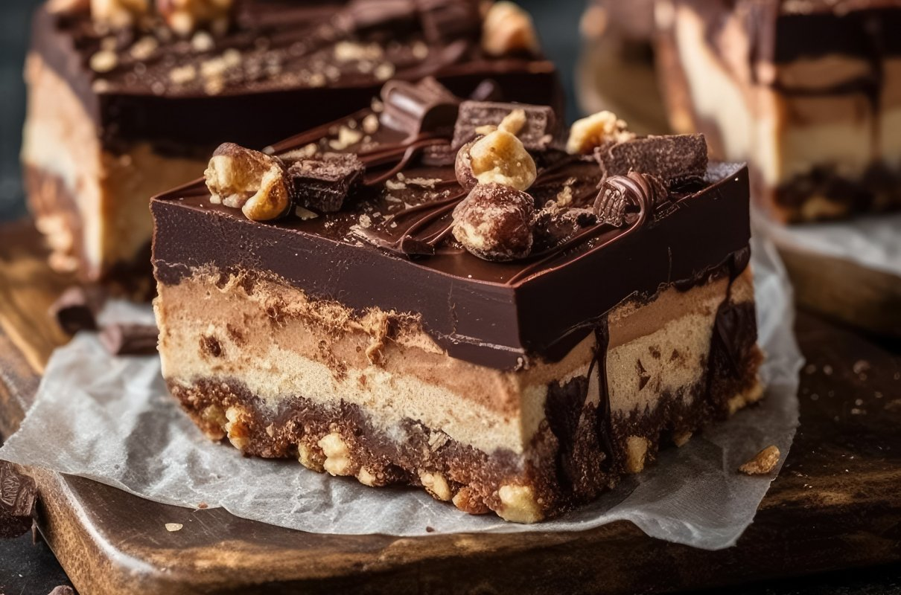
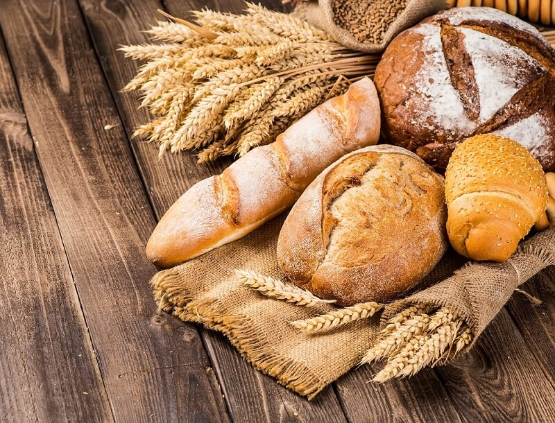

Brownie
Zobacz jak upiec pyszne, wilgotne i mocno czekoladowe brownie. A do tego sposób przygotowania jest bardzo prosty!
ZOBACZ PRZEPIS
Sałatka grecka z chrupiącymi warzywami.
Sałatka grecka ze świeżych warzyw, wyrazistych w smaku czarnych oliwek i sera fety. Jest ona uważana za najlepszy kulinarny wynalazek greckiej kuchni.
- 20 min
- Ulubione
Zupa-krem z pieczonej dyni i marchewki.
Zupa z dyni to kremowy i bogaty w smaku krem o pomarańczowym kolorze. Wyjatkowy aromat daje jej marchewka i pieczona dynia.
- 60 min
- Ulubione

Paella z ryżem, warzywami i kurczakiem.
Zanurz się w świecie hiszpańskich smaków z przepisem na tradycyjną paellę. Z soczystym kurczakiem oraz aromatycznymi warzywami.
- 90 min
- Ulubione
65 przepisów
Śniadania
89 przepisów
Obiady
78 przepisów
Kolacje
67 przepisów
Zupy

106 przepisów
Desery
76 przepisów
Sałatki

56 przepisów
Pieczywo
68 przepisów
Grill
Popularne przepisy

Pizza
184 Polubienia
Pizza Włoska
Pyszna pizza z chrupiącym brzegiem, ciagnący serem, pomidorkami oraz rukolą.
ZOBACZ PRZEPIS
Makaron
172 Polubienia
Makaron ze Szpinakiem
Sycący i aromatyczny przepis na makaron ze szpinakiem i suszonymi pomidorami.
ZOBACZ PRZEPIS
Tort
184 Polubienia
Tort Czekoladowy
Kremowy, aromatyczny i niezwykle intensywnie czekoladowy tort, który uda się w każdej kuchni.
ZOBACZ PRZEPISWarzywa
Najlepsze przepisy na dania z warzyw! Znajdziesz tu między innymi przepis na placuszki z cukini, gulasz z pieczarkami, leczo z papryką, faszerowane ziemniaki, zapiekankę z dynią.
Zobacz więcejOwoce
Najlepsze przepisy na dania z owoców! Koktajl z truskawek, domowe lody jagodowe, zupa wiśniowa, mus malinowo-jeżynowy, dżemy oraz wiele innych przysznych przepisów.
Zobacz więcejPrzepisy okazyjne
Mięso pieczone z warzywami
Przepis na pyszne świąteczne mięso, soczyste i pełne smaku. Dopełnieniem potrawy będą warzywa gotowane na parze.
ZOBACZ WIĘCEJ PRZEPISÓW
Pierogi z kapustą i grzybami
Pierogi to jedno z najbardziej tradycyjnych dań na Wigilię. Delikatne ciasto oraz pyszny farsz z kapusty kiszonej i suszonych grzybów
ZOBACZ WIĘCEJ PRZEPISÓWMakaron z krewetkami
Przepis na obłędne danie, które fani owoców morza pokochają od pierwszego kęsa. Smaku tu dodają również suszone pomidorki i bazylia.
ZOBACZ WIĘCEJ PRZEPISÓWBabka cytrynowa
Wielkanoc bez najlepszej babki cytrynowej jest niepełna. To tradycyjne wilgotne ciasto polane lukrem lub posypane cukrem pudrem.
ZOBACZ WIĘCEJ PRZEPISÓWO MNIE
Miło mi gościć Cię na moim blogu, który powstał z zamiłowania do gotowania i pieczenia. Znajdziesz tu przepisy na klasyczne oraz nowoczesne dania i wypieki, przydatne porady kulinarne i inspiracje. Wszystkie zdjęcia i teksty są mojego autorstwa, a każda potrawa została sprawdzona przeze mnie oraz moją rodzinę lub przyjaciół.
Nowe przepisy na email!
Zapisz się, a otrzymasz każdy nowy przepis na skrzynkę e-mailową!